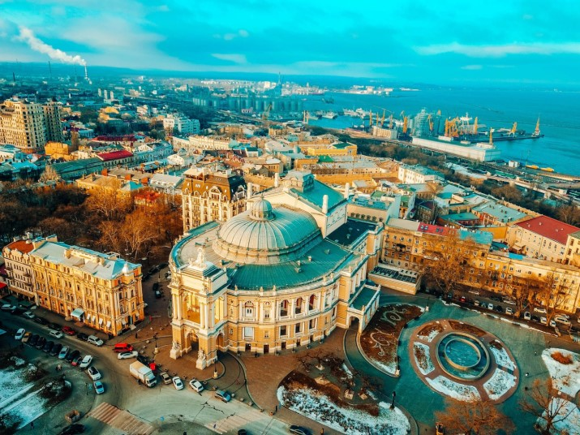

Дата та народження: 11 травня 2004 року, місто Яготин
Освіта: Яготинський ліцей №2; НТУУ "КПІ" місто Київ
Хоббі:
Улюблені книги:
Одеса — місто в Україні, Одеська область, Одеський район. Адміністративний центр області та району. Третє найбільше місто країни після Києва та Харкова. Розташоване на узбережжі Чорного моря. Найбільший морський торговий порт держави. Культурно-освітній, туристичний, торговий, транспортний центр.
